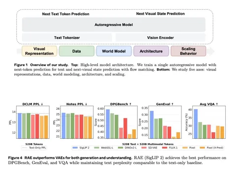

Разбираем статью Meta*, среди авторов которой указаны небезызвестные Yann LeCun и Saining Xie. В работе не предлагают конкретный трюк, а разбираются в дизайне мультимодального претрейна в целом и смотрят на влияние выбора архитектуры, латентного пространства, данных и масштабирования размера модели и объёма обучающей выборки.
Авторы говорят, что если мы хотим мультимодальные модели для текста, генерации изображений и даже world modeling, нужно перестать смотреть на вижн как на вспомогательный сигнал и начать обучать всё вместе с нуля.
Архитектура
В качестве бейзлайна берут Transfusion. Для языка используется next-token prediction, а для вижна — flow matching. Текст моделируется авторегрессионно через кросс-энтропию, а визуальная часть — как предсказание зашумлённого латента. Всё это учится на смеси языковых и визуальных данных.
При этом сама модель — decoder-only Transformer, который учится с нуля, без инициализации от готовой LLM. В отличие от Transfusion, вместо U-Net для проекций в визуальной модальности применяют более простые линейные проекции. Делают вывод, что лучше использовать modality-specific FFN вместо shared. Аттеншн остаётся общим, а FFN для текста и вижна — разделяются, что даёт выигрыш по text perplexity, image generation и VQA.
По визуальным представлениям сравнивают SD-VAE, FLUX.1, семантические энкодеры вроде SigLIP 2 So400M, DINOv2-L, WebSSL-L и сырые пиксели. Лучший вариант — RAE, причём особенно хорош SigLIP 2. Делают вывод, что один RAE-based encoder может одновременно хорошо работать и для visual understanding, и для генерации, не портя текстовые метрики.
Данные
Авторы взяли большой текстовый корпус DCLM, сырые видео из YouTube и публичных видео-датасетов, пар «изображение-текст» из MetaCLIP и Shutterstock, а также обусловенные на действие траектории навигации. Замечают, что мультимодальные данные не конкурируют с текстовыми. Если добавить видео, текстовая перплексия почти не портится, а местами даже становится лучше. Хуже с image-caption-данными — у кэпшенов другое распределение относительно текста из DCLM.
При этом сами пары «изображение-текст» критичны для понимания и генерации картинок. Без них ничего толком не работает. Если при фиксированном бюджете визуальных токенов добавлять больше текста, то улучшается и diffusion loss, и GenEval. Для VQA полезнее широкий претрейн, чем масштабирование узких данных. Даже если задача узкая, лучше иметь более широкий претрейн, чем просто ещё больше того же самого доменного датасета.
Эксперименты
Есть раздел о Navigation World Model. World modeling возникает скорее из общего мультимодального претрейна, а не из обучения только на navigation-данных. Особенно помогают сырые видео. При этом для хороших world-modeling-способностей доменных navigation-данных нужно совсем немного: если есть хорошая общая мультимодальная инициализация, дальше всё быстро выходит на плато.
Отдельно исследуют MoE. Переходят от простого modality-specific FFN к Mixture-of-Experts. MoE работает лучше, чем вручную заданные схемы разделения, и естественным образом учит специализацию. Чем выше гранулярность экспертов (отношение общего размера эмбеддинга модели к размеру одного эксперта), тем лучше качество, но примерно после значения в 16 всё выходит на плато.
При фиксированном бюджете активных вычислений увеличение общего числа экспертов тоже помогает, и для RAE это особенно заметно. Кроме того, полезно иметь общих (всегда активных) экспертов, причем лучше всего — отдельного общего под каждую модальность.
В конце авторы собирают всё вместе. Оптимальная конфигурация выглядит как MoE + modality-specific FFN + SigLIP 2 / RAE + x-prediction. Она даёт лучший баланс по перплексии, качеству генерации изображений и VQA.
Разбор подготовил
CV Time
___
Компания Meta признана экстремистской; её деятельность в России запрещена.
